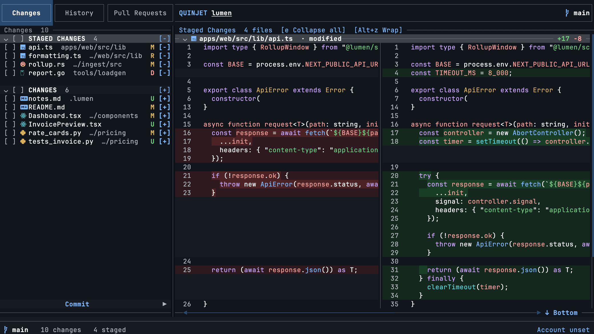
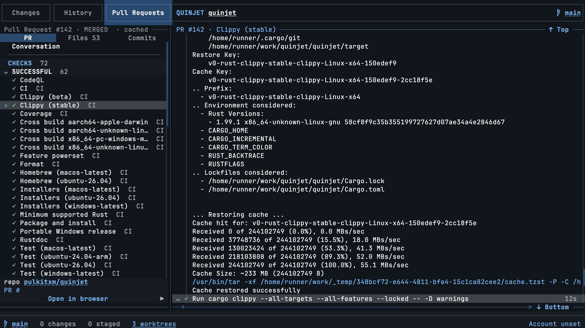

Unified or side by side
Draggable panes, compact hunks by default, full file context on t. Syntax highlighting for Rust, TypeScript, Python, Go and hundreds more.
● MIT licensed · written in Rust
Quinjet is a fast, live, keyboard-first Git interface for the terminal. Stage files, read syntax-highlighted diffs, and open any pull request with its full conversation, reviews and live GitHub Actions logs.
$brew install pulkitxm/tap/quinjet
Also on apt, Winget, cargo and a one-line script. All install options ↓

The part nothing else does
Press 3, type a PR number, press Enter. You get the description, every comment and review thread with its inline replies, every pushed commit and force push, and every check run. Select a check and its steps fold open to the log lines that step produced, tailing while the job is still running.

Why it feels different
quinjet pr checks 12 --watch blocks until CI settles, and --json works everywhere.--yes.Everything else
Draggable panes, compact hunks by default, full file context on t. Syntax highlighting for Rust, TypeScript, Python, Go and hundreds more.
Visible per-file and per-group stage actions, multi-file checkboxes, and revert or remove behind a confirmation every time.
Paginated history scoped to the branch you chose, with a view-only picker that never checks anything out.
Catppuccin, Dracula, Gruvbox, Nord, Rosé Pine, Tokyo Night and more, each following your system appearance at startup.
Staged-only, untracked-inclusive, preview, apply, pop, drop and clear, from a manager or the command palette.
Natural wheel scrolling in whichever pane is under the pointer, draggable dividers, and m to hand the mouse back to your terminal.
Install
Git is required at runtime. A true-color terminal and a current Nerd Font are recommended. The Pull Requests view also needs the GitHub CLI with an authenticated account.
$ brew install pulkitxm/tap/quinjet
$ curl -LsSf https://quinjet.pulkit.page/install.sh | sh
> winget install --id Pulkitxm.Quinjet --exact
$ cargo install quinjet
$ curl -fsSL https://quinjet.pulkit.page/apt/quinjet.asc \ | sudo tee /etc/apt/keyrings/quinjet.asc >/dev/null $ echo "deb [signed-by=/etc/apt/keyrings/quinjet.asc] \ https://quinjet.pulkit.page/apt stable main" \ | sudo tee /etc/apt/sources.list.d/quinjet.list $ sudo apt update && sudo apt install quinjet
$ cd any/git/repository $ quinjet or the shortcut it installs $ q